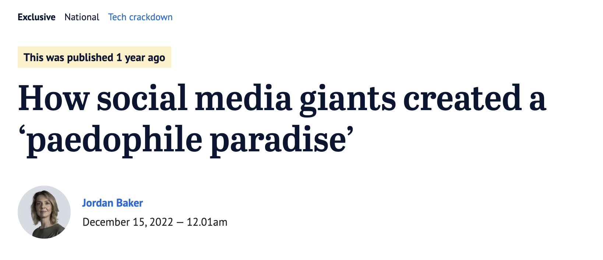
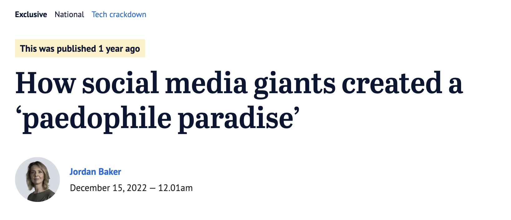
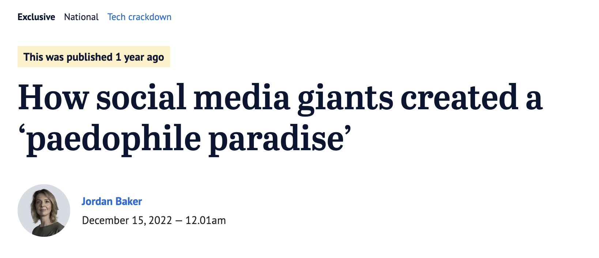
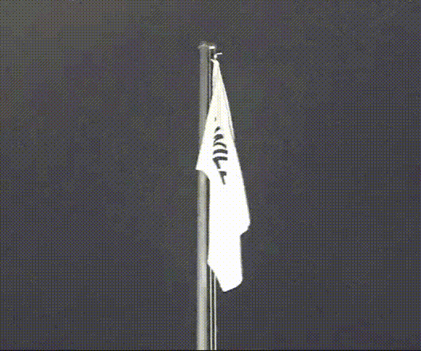
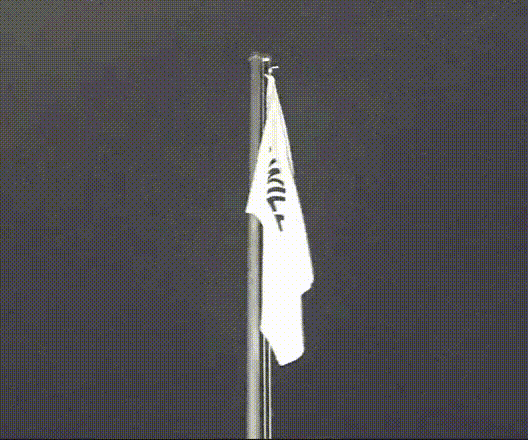
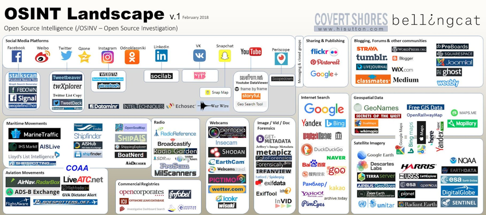

Про информационную гигиену
(прошу по-хорошему)
🧚 Меня зовут Талифа Аушева
🦅 Переехала в Мюнхен из Ингушетии
🎓Выпускница кафедры Информационной безопасности СКФУ
🌀 Разрабатываю фронтенд в Personio
🧘♀️ Преподаю программирование на React
✨ Лучший фронтенд-разработчик в родном поселке городского типа
😐
Glenn Greenwald. Why privacy mattersВ конце концов, если вы не плохой человек, если вы не делаете ничего плохого, то вам не нужно ничего скрывать



 
Шайа
ЛаБаф спрятал антитрамповский флаг

Шайа
ЛаБаф спрятал антитрамповский флаг

Разведка по открытым источникам (англ. Open source intelligence, OSINT) — разведывательная дисциплина, включающая в себя поиск, выбор и сбор разведывательной информации из общедоступных источников, а также её анализ и систематизацию.
интернет-издание, основанное 14 июля 2014 года британским гражданским журналистом и блогером Элиотом Хиггинсом и занимающееся журналистскими расследованиями о зонах военных действий, используя метод анализа данных из открытых источников.
содержит массу собранных онлайн-инструментов, ресурсов и приложений, которые помогут вам в ваших собственных расследованиях с открытым исходным кодом.
 Bellingcat's Online Investigation Toolkit https://www.security.org/how-secure-is-my-password/
https://www.security.org/how-secure-is-my-password/